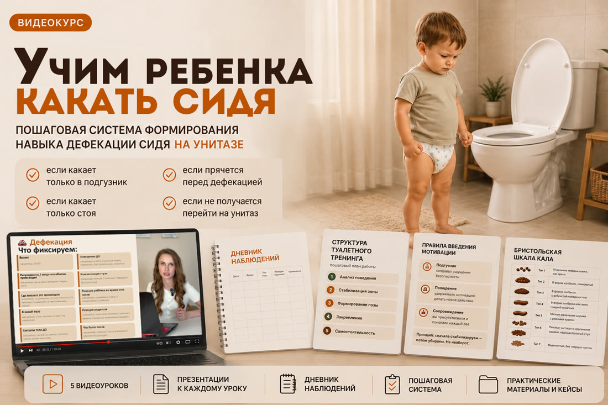

Главная / Продукты / Курс
Видеокурс
Дефекация сидя
Пошаговая система формирования туалетного навыка. 5 видеолекций и практические материалы для родителей.
Для кого
Если ребёнок
- Какает только стоя
- Делает это в подгузник
- Прячется, терпит, уходит в угол
- Не садится на горшок или унитаз
- Есть протесты и страхи
- Вы уже пробовали всё, но ничего не работает

Что внутри
Что разбираем в курсе
- Как перенести дефекацию в туалетную зону
- Как изменить позу поэтапно
- Как выстроить мотивацию, чтобы ребёнок сотрудничал
- Как убрать подгузник без стресса
- Как закрепить навык без откатов
- Разбор кейсов с результатами клиентов
Как пользоваться
Видеолекции и материалы
5видеолекций
Дневникнаблюдения
Структуратренинга
Системапоощрений
Это готовая пошаговая система, по которой Александра работает с семьями.
Стоимость
3 500 ₽
Формат: 5 видеолекций и практические материалы. Для детей от 2,5 лет.
Купить курс
Нажмите и выберите мессенджер, в который удобнее написать.
Вопросы
Частые вопросы
С какого возраста подходит курс?
Курс подходит для детей от 2,5 лет.
Чем курс отличается от руководства?
Курс состоит из видеолекций и практических материалов, руководство цифровое (PDF) и предназначено для самостоятельной работы. Курс подробнее разбирает шаги и кейсы.
Нужна ли консультация вместе с курсом?
Курс рассчитан на самостоятельную работу. Если нужна обратная связь специалиста, можно взять индивидуальное сопровождение.